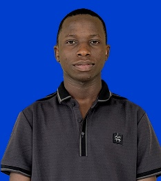
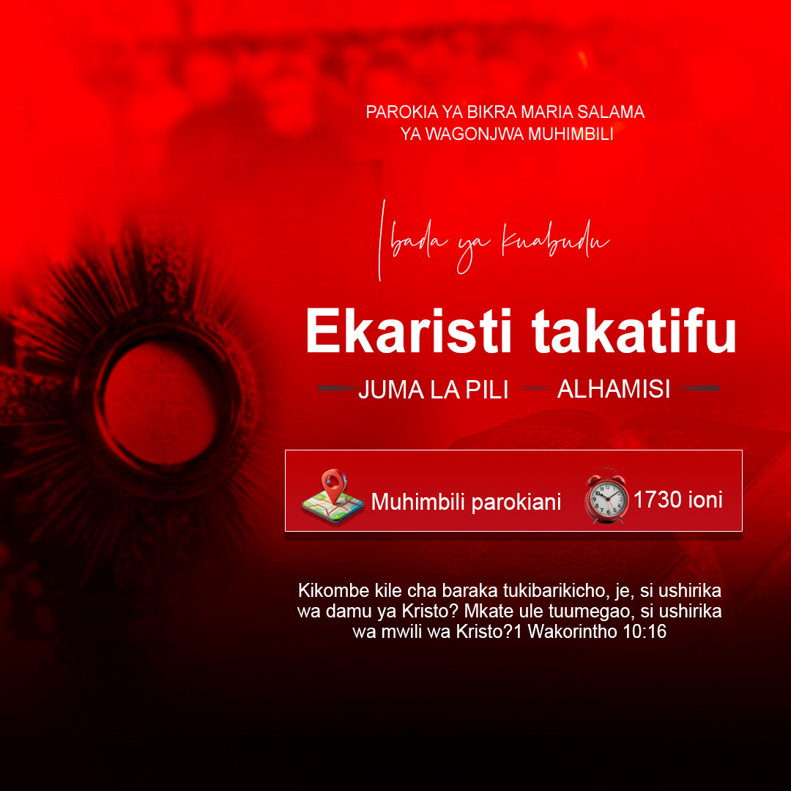
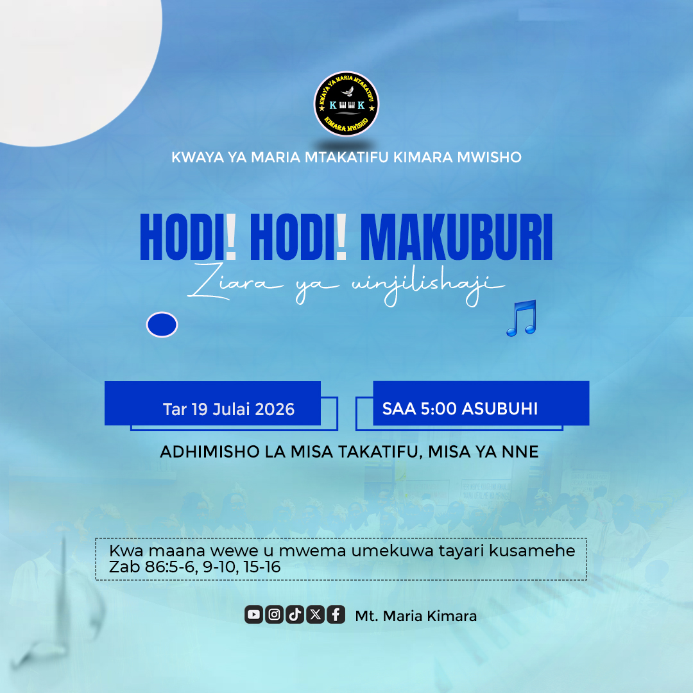
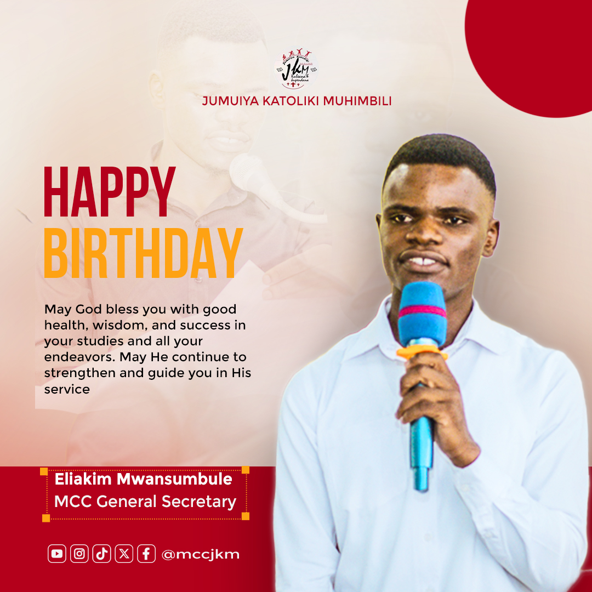
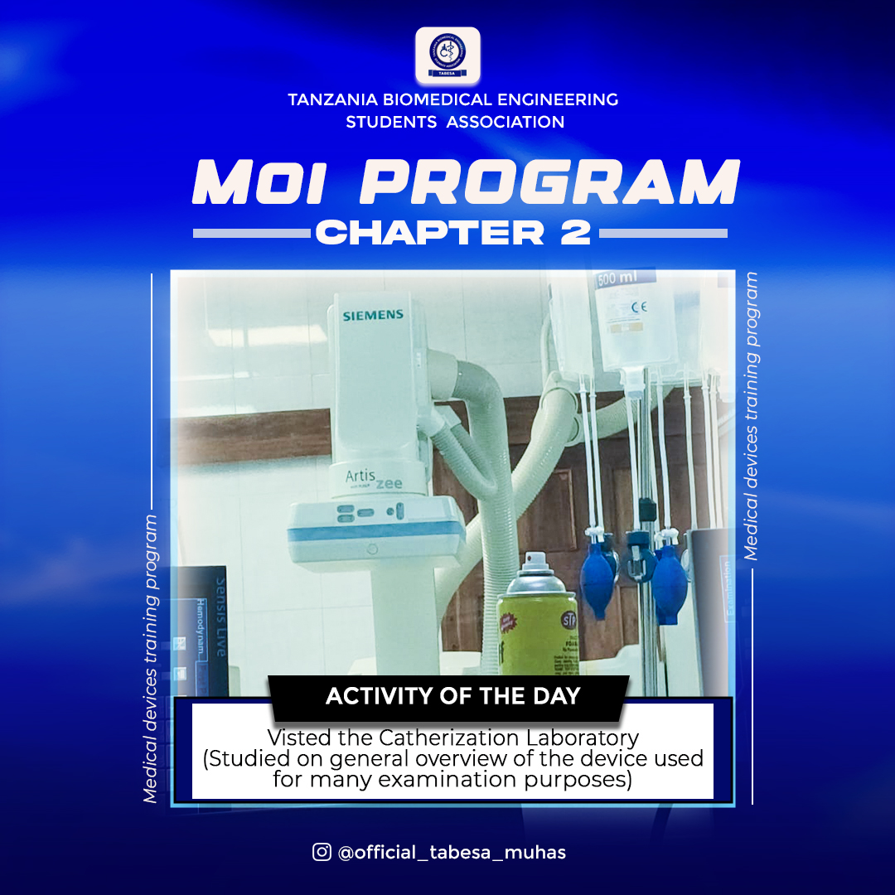
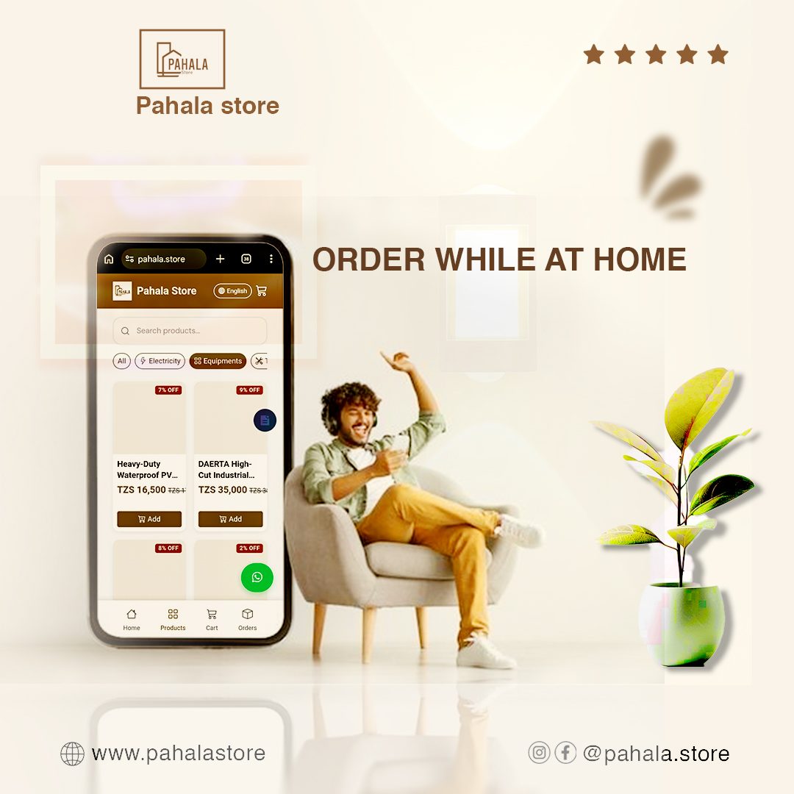
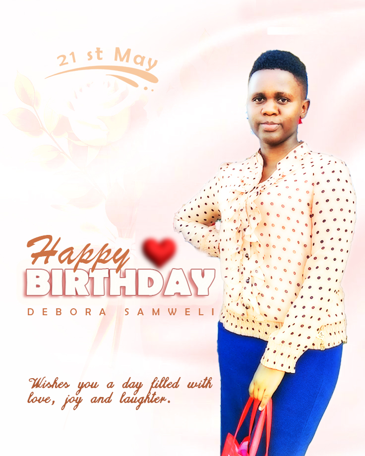

Biomedical Engineering · MUHAS
Engineering health.
Engineering health.
Designing impact.
I'm Emmanuel, a Biomedical Engineering student in Dar es Salaam building machine learning tools for healthcare, and a graphic designer who makes posters that people stop to read.

84.4% ML accuracy
🎨 Poster designer
84.4%Accuracy on Titanic ML pipeline
5Leadership and organising roles
2025Medical device training, Bugando
3Languages: English, Kiswahili, French
Two sides, one mind
Engineer and designer
I solve problems with data and medical technology, and I communicate ideas with strong visuals.
Selected work
All projects →Projects
Machine learning
Titanic Survival Prediction
End-to-end ML pipeline comparing Random Forest, SVM and Neural Networks. 84.4% cross-validation accuracy.
View project →Data science
Kaggle Competitions
Competing on Kaggle to practise data cleaning, modelling and evaluation on real datasets.
View project →Research interest
Machine Learning for Healthcare
Exploring how machine learning on biomedical signals and images can support diagnosis and prediction.
View project →From the studio
Full gallery →Latest posters






Recently
Activity
- Leader, publicity, TABESA TAIFA2026
- Participant, 1st BME Connect Summit2026
- Founded the 4d_farm platform2026
- Industrial practical training, medical devices2025 · Bugando Medical Centre
Toolkit
Skills
- Python
- scikit-learn
- pandas
- NumPy
- Jupyter
- Machine learning
- Deep learning
- Medical devices
- Poster design
- Graphic design
- Leadership
- Public communication
Need a poster or a data project?
I'm open to collaboration in biomedical engineering, machine learning and design.